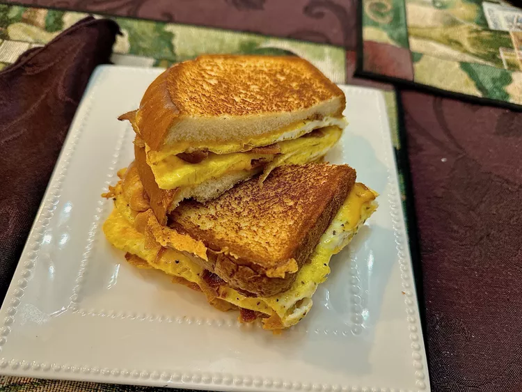

Chocolate Chip Cookies
Yield: 2 servings (Source)

Ingredients:
- 2 slices bacon
- 4 slices bread
- 3 large eggs
- 4 tsp butter (divided)
- 1 pinch salt
- 1 pinch freshly ground black pepper
- 1/ cup shredded Cheddar cheese
Procedure:
-
Place bacon in a nonstick skillet and cook over medium-high heat,
turning occasionally, until evenly browned (7 minutes)
- Drain bacon slices on paper towels
- Drain off bacon grease for another use
- Wash out skillet
- Whisk eggs with salt and pepper in a small bowl until frothy
- Melt 2 tsp butter in the nonstick skillet over medium heat
- Pour in beaten eggs (cook 30 seconds)
-
Lift the edges of the omelet so that the uncooked egg runs under the
cooked edges and comes int contact with the hot skillet
- Shake and tilt the skillet to move the uncooked egg
- Repeat until top is set (3 minutes on low)
-
Chop bacon roughly; sprinkle over omelet with cheese (allow cheese to
melt 1-2 minutes)
- Butter 2 slices of bread with 1/2 tsp butter each
-
Lay bread, buttered side up, side-by-side over omelet, leaving about 1
inch between slices
- Run a spatula around the entire omelet to loosen from the skillet
-
Carefully turn the omelet over so buttered side of bread is in contact
with the skillet
- Cook until bread is toasted and golden (~2 minutes)
-
Using the spatula, fold in edges of omelet to align with sides of the
bread
- Cut omelet along center with the spatula to form 2 sandwiches
-
Butter 2 remaining bread slices with remaining butter; place butter side
up on each sandwich
- Turn sandwiches; cook until golden (~2 minutes)
Main Page